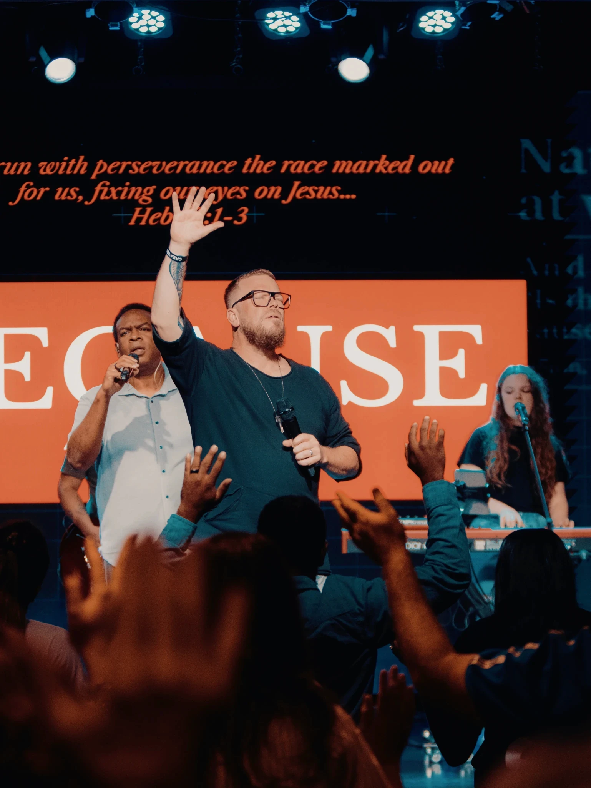
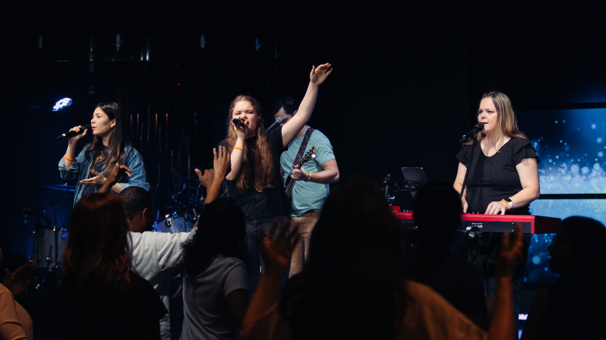
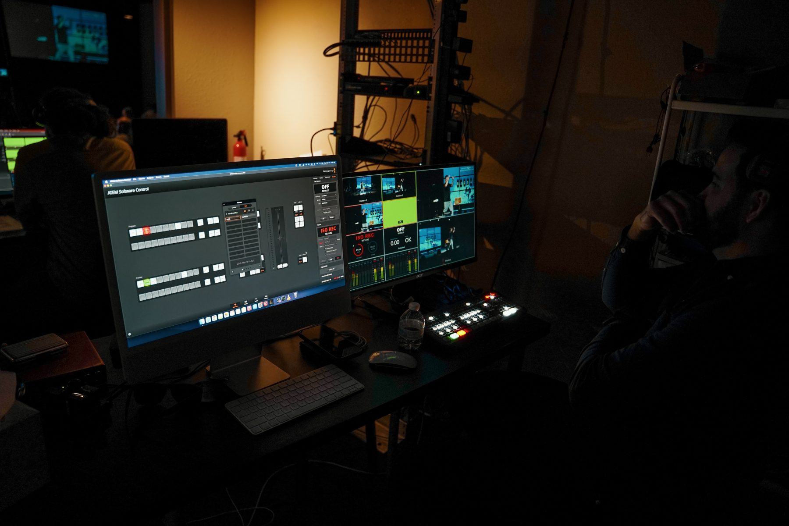
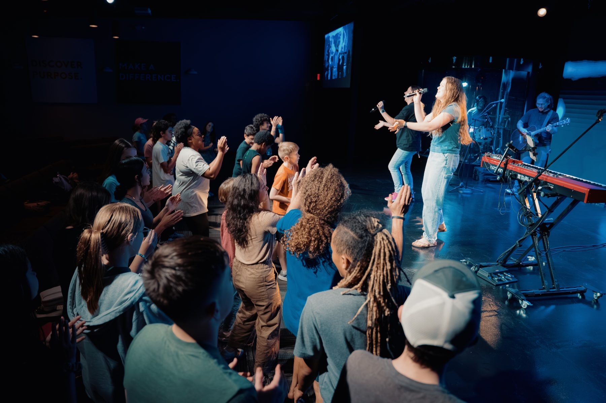
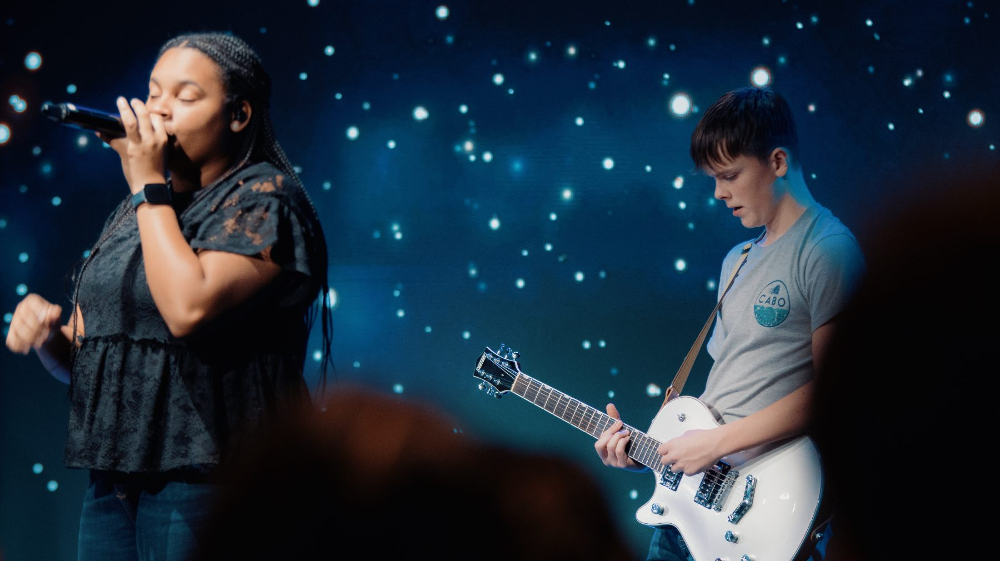
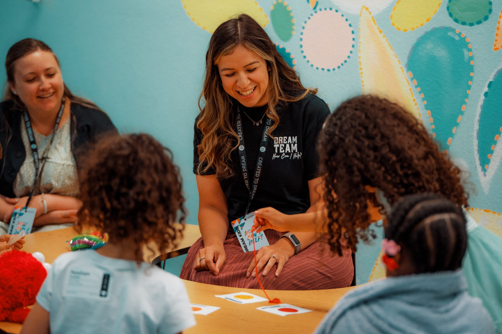
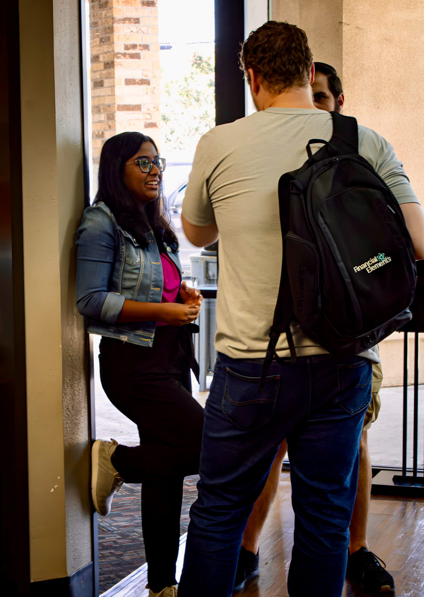
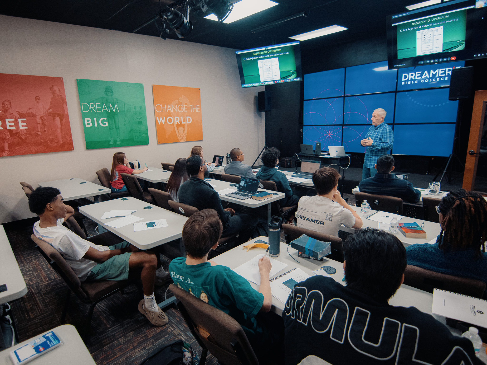

Start the
adventure
What if the next season of your life was more than just college credits? What if it was a life-changing adventure with God?


A launchpad
for your purpose
Dreamer’s Bible College is designed to help you grow deeper in your faith, learn the Bible, discover your calling, and become the leader God created you to be. Whether you feel called to ministry, leadership, or simply want to build your life on a stronger foundation, this is a place where your faith can come alive.
You will study Scripture, serve in the local church, build lifelong friendships, and experience two unforgettable trips within the United States, all while earning your Bible College degree.
Come grow with us, serve with us, and take a bold step into the future God has for you.
Why
Dreamer’s
Bible College?
You do not have to choose between biblical depth and real-world ministry experience. At Dreamer’s Bible College, you receive both.
Here, your faith is strengthened through Scripture. Your leadership is developed through service. Your calling is shaped through community, mentorship, and the life of a thriving local church.
{{ f.t }}
{{ f.d }}
Designed for
your next step
Dreamer’s Bible College offers flexible pathways for students who want to grow in Scripture, ministry, leadership, and spiritual maturity.
Whether you are just out of high school, already serving in church, exploring a call to ministry, or looking to deepen your biblical foundation, DBC gives you a practical way to be equipped without disconnecting from local church life.
Program Highlights
Rooted in
the Word
A strong calling needs a strong foundation. At Dreamer’s Bible College, students are equipped to study Scripture, understand biblical truth, think theologically, and apply the Word of God to life and leadership.
Academics at DBC are designed to form more than knowledge. They are designed to shape conviction, character, and spiritual maturity.
Ministry
Focus
Calling becomes clearer when you start serving. At Dreamer’s Bible College, students can grow through ministry focuses that connect classroom learning with real church leadership.






{{ active.title }}
{{ active.d }}
Tuition that supports your calling
Investing in your calling is a big step. We want to help you understand the cost clearly and explore options that may make Dreamer’s Bible College possible for you. Tuition details, payment options, and potential scholarship or financial assistance opportunities may be available depending on your pathway and enrollment status.
The best next step is to apply or request information and connect with our team. We will help you understand your options and answer your questions.


Be formed in community
Dreamer’s Bible College is not only about what you learn. It is also about who you become. Students grow in a community marked by worship, prayer, Scripture, service, friendship, and shared hunger for God.
A place to be known. A place to be challenged. A place to grow stronger with others moving in the same direction.
Every student
has a story
At Dreamer’s Bible College, students are growing in Scripture, confidence, leadership, and calling.
“{{ t.q }}
Join us for a
Preview Day
Come see what Bible college is really like. Meet the students, sit in on lectures, and experience a full day at Dreamer’s Bible College.



Questions?
Start here.
{{ q.a }}

Ready to
dream
bigger?
Start by completing the application or requesting information. Our team will help you understand the next steps.